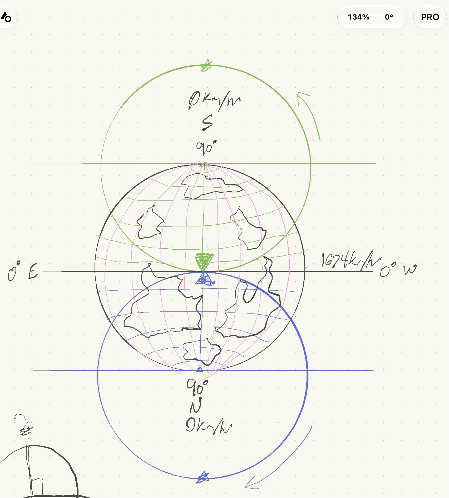

Theorema Egregium · Star positions on a stationary disc
A sketch proposes a stationary disc Earth with two star fields turning over it, one about the north rim point and one about the south. Here that layout is tested on star positions alone: where 30 real quasars appear from 24 cities, hour by hour. Each quasar was given every freedom we could think of. The question is the smallest angular error any combination reaches.

Hidden time sets how long each quasar spends crossing the unknown zone. At 0 h it jumps across instantly and sweeps its visible half at 7.52°/h. The measured 15.04°/h only appears at 12 h, which is plain uniform rotation. Best-fit points were solved every 2 sidereal hours and blended between.
| # | Freedom | Range allowed | Where it was tested |
|---|---|---|---|
| 1 | Position across the plane (x, y) | Anywhere, ±10 000 000 km | Free-position fit, free-layout fit |
| 2 | Height above the disc | 1 m to 100 000 000 km | Pole-height test, both fits |
| 3 | Height changing with time | Independent at every 2-hour step | Both fits |
| 4 | Rotation centre | N or S rim point by declination; any point in the fits | Circle sims, both fits |
| 5 | Circle radius | Set by declination in the sims; any in the fits | Circle sims, both fits |
| 6 | Launch (start) angle on the circle | ±90° offset | Arc sim |
| 7 | Launch baseline (tangent line position) | 0 to 11 000 km beyond the pole point | Baseline sim |
| 8 | Visible arc span | 180° to 360° | Arc and baseline sims |
| 9 | Speed on the visible arc | Whatever the arc and timing require | All sims |
| 10 | Speed and path in the unknown zone | Anything, including instantaneous | Hidden-zone sim; the fits ignore the path |
| 11 | Observer layout (every city's x, y and local north) | Free, scale free | Free-layout fit only |
Held fixed: what each city actually sees: altitude and azimuth from catalogue RA/Dec and sidereal time, sightings above 5° only. Brightness, fading and extinction are not used; this pass is positions only. No refraction model, since it is at most about 0.2° above 5° altitude.
Every quasar is measured turning at 15.04°/h about the celestial pole (one turn per 23 h 56 m 4 s).
| Visible arc | Hidden time | Visible rate | Hidden rate |
|---|---|---|---|
| 180° | 0 h | 7.52°/h | instant |
| 180° | 6 h | 10.04°/h | 30.0°/h |
| 180° | 11.97 h | 15.04°/h | 15.04°/h |
| 270° | 0 h | 11.28°/h | instant |
| 270° | 6 h | 15.04°/h | 15.04°/h |
| 360° | — | 15.04°/h | none |
Only uniform rotation gives the measured rate, so the tangent lines do no work. Pushing the baseline out until every arc is 360° fixes the rate, but then no quasar ever sets: from Nanton, PKS 0637−752 (real maximum altitude −35.6°) would be up all day.
The celestial pole appears at altitude equal to latitude. On the disc that needs a pole star at height h = d · tan|lat|, where d is the distance to the rim point.
| City | Lat | d, km | h needed, km |
|---|---|---|---|
| Quito | −0.2° | 11 504 | 36 |
| Nanton | 50.4° | 4 815 | 5 810 |
| London | 51.5° | 6 591 | 8 289 |
| Sydney | −33.9° | 6 341 | 4 261 |
| Cape Town | −33.9° | 8 891 | 5 974 |
One star, one height: the required heights span 36 to 8 289 km. Sydney and Cape Town share a latitude yet need different heights.
Each quasar free in x, y and height at each instant (freedoms 1–5), fitted to every city that sees it above 5°. 30 quasars × 12 instants = 360 fits, each from 4 starting heights.
9.4° smallest rms error in any of the 360 fits
Median rms error 25.0°. Best-fit heights mostly 2 000–6 000 km, changing from hour to hour and quasar to quasar; many southern ones run off to 10⁵–10⁷ km.
Freedom 11 added: every city's position and local north free as well. 1 152 unknowns fitted to 4 040 sightings by sparse least squares, from two starting layouts that converged to the same result.
17.3° rms · median 9.6° · 90th percentile 26°
Best cities about 9° rms (Edmonton, Nanton, Reykjavik); worst about 29–31° (Auckland, Ushuaia, Cape Town, Perth). The fitted layout stretches distances by 0.53× to 2.89× of the globe values (London–Reykjavik 0.53, Perth–Cape Town 2.01).
| Position measured by | Precision | Best disc residual (9.4°) in multiples |
|---|---|---|
| Coordinates used here (typed, approximate) | ~1′ | ~560× |
| Naked eye | ~2′ | ~280× |
| Seestar S30, plate solved | ~2″ | ~17 000× |
| VLBI (ICRF) | ~0.0001″ | ~3 × 10⁸× |
Finding so far: no tested combination of position, height, timing, launch angle, baseline or layout brings the disc model within hundreds of σ of the quasar positions, even taking σ as the 1′ accuracy of the approximate coordinates used here. This is a fallible, inductive result from a first pass and subject to change.
Reproduce with Python 3, NumPy and SciPy from scripts/: python3 rate_tests.py, python3 fit_disc.py (about 1 min), python3 fit_free_layout.py (about 3 min). Outputs land in data/.